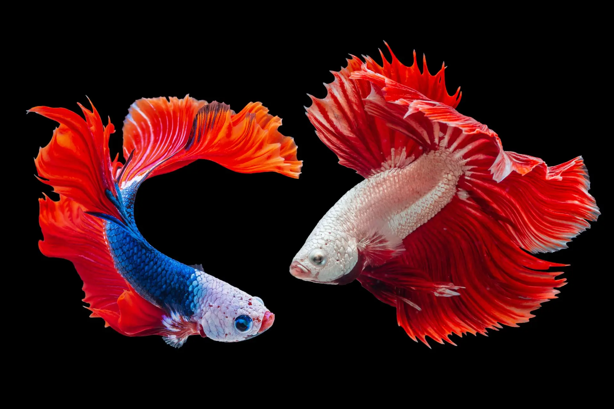
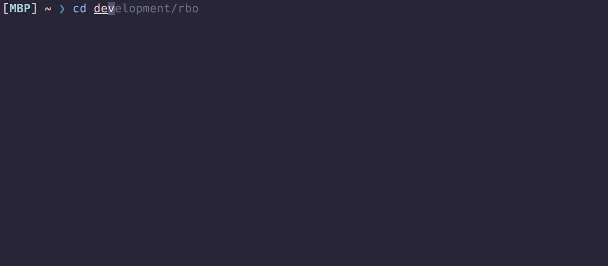
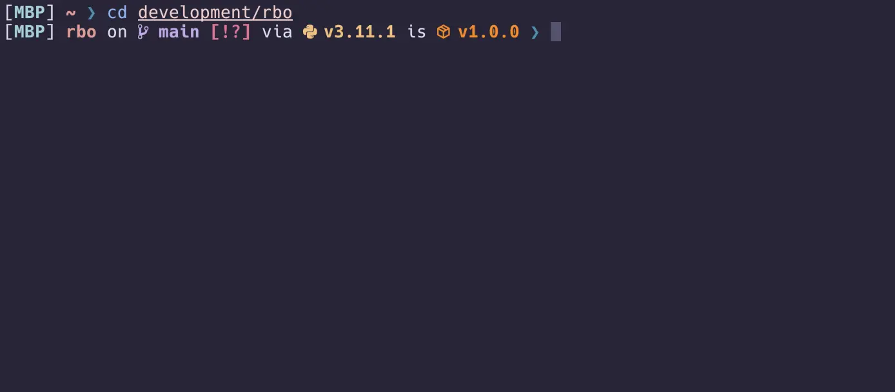
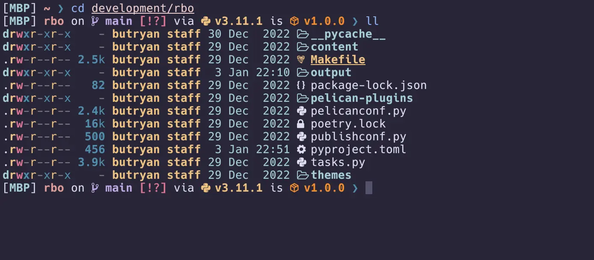

Moving to fish shell
Table of contents

Fish (short for Friendly Interactive Shell) is a Unix shell that aims to be more interactive and user-friendly than other shells such as the Bourne Shell (sh) or the Bourne Again Shell (bash).
1. Features
Some of the features that make Fish more user-friendly include:
- Syntax highlighting: Fish automatically highlights different parts of the command line to make it easier to read and understand.
- Autosuggestions: As you type a command, Fish will suggest possible completions based on your history and the contents of your directories.
- Web-based configuration: Fish provides a web-based interface for configuring and customizing the shell, which can be accessed by running the fish_config command.
- Consistency: Fish has a consistent syntax and naming conventions for its commands, which can make it easier to learn and use.
- Fish also includes a number of other features that can be useful for users, such as tab completion, history search, and support for plugins and themes. It is available for most Unix-like operating systems, including Linux, macOS, and BSD.
2. Installation
To install on macOS or Linux using Homebrew(Linuxbrew):
// Install fish using HomeBrew on macOS
❯ brew install fish
Once installed, enter fish to start the shell:
❯ fish
Welcome to fish, the friendly interactive shell
Type help for instructions on how to use fish
you@hostname ~>
To make fish your default shell, you can add the fish executable, which was
added to your $PATH, to your /etc/shells:
❯ which fish
/usr/local/bin/fish
❯ echo /usr/local/bin/fish | sudo tee -a /etc/shells
Then change your default shell with the below command:
❯ chsh -s /usr/local/bin/fish
To get familiar with the basics I recommend reading through the official tutorial.
3. Configuration
The main configuraton file is ~/.config/fish/config.fish. Coming from bash
and zsh I found the fish for bash
users reference
really helpfull.
Below is a snippet from my config.fish at the time of this article:
# set default editor to Neovim
set -gx EDITOR nvim
# set VIM key bindings
function fish_user_key_bindings
bind yy fish_clipboard_copy
bind Y fish_clipboard_copy
bind p fish_clipboard_paste
end
# disable greeting
set fish_greeting
# Set the maximum number of open file descriptors.
ulimit -n 10240
# Force true-color support on
set -g fish_term24bit 1
# Update $PATH
set -gx PATH bin $PATH
set -gx PATH ~/bin $PATH
set -gx PATH ~/.local/bin $PATH
# Add Rust to $PATH
set -U fish_user_paths $HOME/.cargo/bin $fish_user_paths
# aliases
alias v "nvim"
alias vi "nvim"
alias vim "nvim"
alias t "tmux"
alias sf "source ~/.config/fish/config.fish"
alias tmuxrc "vim ~/development/dotfiles/tmux/tmux.conf"
alias fishrc "vim ~/development/dotfiles/fish/config.fish"
alias vimrc "vim ~/development/dotfiles/nvim"
# Git
alias gs "git status"
alias ga "git add -A"
alias gl "git log"
alias gd "git diff"
alias gcm "git commit -m"
alias gma "git commit -am"
alias gb "git branch"
alias gc "git checkout"
alias gp "git push"
alias gw "git clone --bare"
alias gf "git fetch --all"
# exa
if type -q exa
alias ll "exa -l -g --icons"
alias ls "exa --icons"
alias lla "ll -a"
alias tree "exa --tree --level 2 --icons --long --all --ignore-glob '.git|node_modules|*.pyc|__pycache__/.DS_Store'"
end
# ASDF
source /usr/local/opt/asdf/libexec/asdf.fish
# Pipx
set -gx PATH $HOME/.local/bin $PATH
set -gx PIPX_DEFAULT_PYTHON $HOME/.asdf/shims/python
# fzf
# nav with tab
set FZF_DEFAULT_OPTS "--bind=shift-tab:up,tab:down"
# rosepine
set FZF_DEFAULT_OPTS $FZF_DEFAULT_OPTS"
--color=fg:#e0def4,bg:#2a273f,hl:#6e6a86
--color=fg+:#908caa,bg+:#232136,hl+:#908caa
--color=info:#9ccfd8,prompt:#f6c177,pointer:#c4a7e7
--color=marker:#ea9a97,spinner:#eb6f92,header:#ea9a97"
# zoxide
zoxide init fish | source
# Starship prompt
starship init fish | source
Below are screenshots from my current terminal configuration using Kitty, Fish, Starship, Exa and a rose-pine colour palette.



It is really easy to move to fish and like that autosuggestions and other features are built-in. Opening new terminal windows loads instantly with the prompt ready for action. I hope my article has convinced you to give fish a try, I just love it!